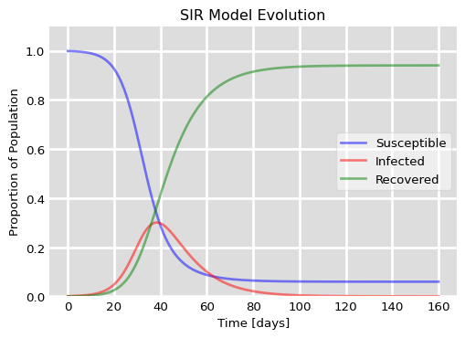
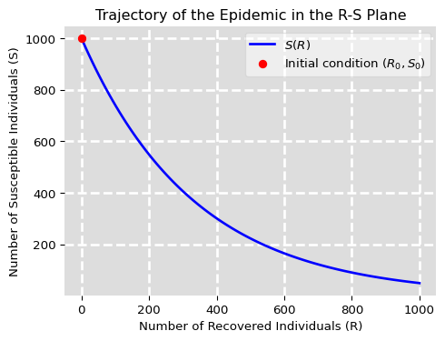
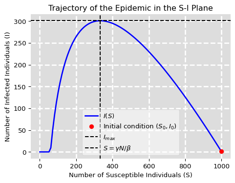
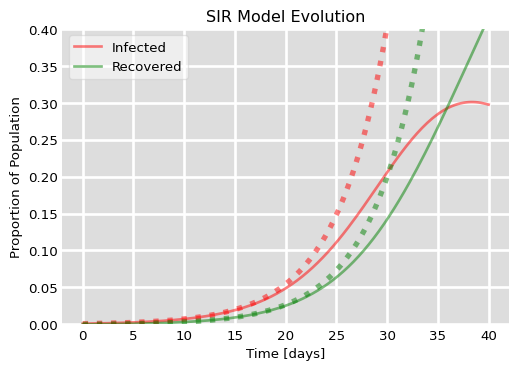
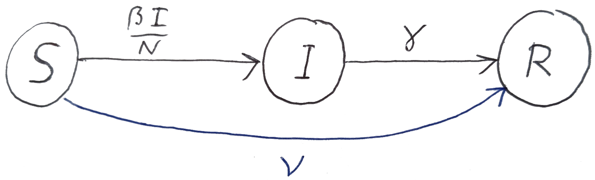
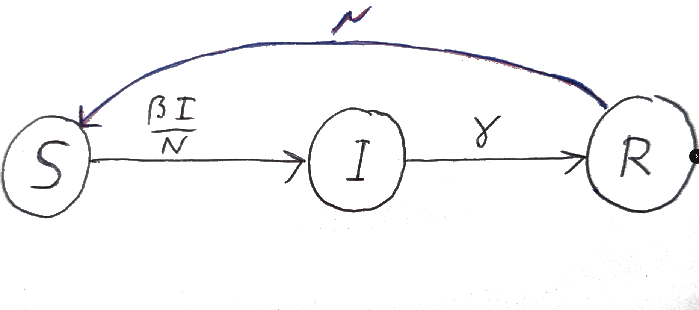

“As a matter of fact, all epidemiology, concerned as it is with the variation of disease from time to time or from place to place, must be considered mathematically, however many variables are implicated, if it is to be considered scientifically at all.” – Sir Ronald Ross
Mathematical epidemiology applies mathematical modelling and statistical analysis to understand the spread of infectious diseases within populations. This is an important topic for several reasons:
Control and prevention of diseases: Mathematical models can be used to predict the spread of infectious diseases, estimate the effectiveness of control measures, and inform public health policy. By studying mathematical epidemiology, researchers and public health officials can develop strategies to prevent and control the spread of diseases, which can save lives and reduce healthcare costs.
Improved disease surveillance: Mathematical models can also be used to estimate disease incidence, prevalence, and mortality rates, which can help to improve disease surveillance systems. By accurately tracking disease outbreaks, public health officials can respond quickly to control and prevent further spread of the disease.
Understanding disease transmission dynamics: Mathematical models can provide insight into the transmission dynamics of infectious diseases, such as how they spread within populations, how they interact with different populations, and how they evolve over time. This understanding is critical for developing effective disease control measures and for predicting the potential impact of emerging diseases.
Development of vaccines and treatments: Mathematical modelling can aid in the development of new vaccines and treatments for infectious diseases. By understanding the transmission dynamics and the immune response to diseases, researchers can develop more effective vaccines and treatments that can prevent or reduce the severity of infections.
Before we get started, let us explain some terms used to describe different levels of disease prevalence and spread:
Epidemic: An epidemic refers to the sudden increase in the number of cases of a disease above what is normally expected in a given population and geographic area. The outbreak is usually limited to a specific community or region and can be caused by a new or re-emerging infectious agent. The epidemic may last for several weeks or months before it is brought under control.
Pandemic: A pandemic is an epidemic that has spread over a larger geographic area, often spanning multiple countries or continents. A pandemic is usually caused by a new strain of an existing virus or by a completely new virus that can spread quickly and easily from person to person. Pandemics can have a significant impact on public health and can cause widespread illness and death.
Endemic: An endemic disease is one that is regularly found in a population or geographic area at a consistent and predictable rate. Endemic diseases may cause illness and death but are typically well-controlled by routine public health measures, such as vaccination and surveillance. For example, malaria is endemic in many parts of the world, and measures such as mosquito control and antimalarial medications are used to prevent and treat the disease.
6.1 SIR model
The SIR model is a very idealised mathematical model that is commonly used to describe the spread of infectious diseases in a population. The acronym SIR stands for Susceptible, Infected, and Recovered, which are the three main compartments of the model.
The SIR model was first introduced in 1927 by Kermack and McKendrick in their landmark paper “A Contribution to the Mathematical Theory of Epidemics”. The model was developed in response to the major epidemics of the early 20th century, such as the Spanish flu pandemic of 1918-1919, which highlighted the need for a quantitative understanding of the spread of infectious diseases.
The SIR model was one of the first mathematical models to be developed for the study of infectious disease dynamics, and it remains one of the most widely used and influential models in the field of mathematical epidemiology. The model has been used to study a wide range of infectious diseases, including measles, tuberculosis, HIV/AIDS, and COVID-19, and has been extended and adapted to address new challenges and incorporate new data sources.
The SIR model and its variants have played a key role in informing public health policy and practice, by providing insights into the impact of different intervention strategies, such as vaccination, quarantine, and social distancing. The model has also helped to guide the design of clinical trials and the development of new drugs and vaccines, and has contributed to our understanding of the fundamental principles of infectious disease transmission.
6.1.1 Three-compartment model
In the SIR model, individuals in a population are divided into three groups (or compartments): those who are susceptible to the disease (\(S\)), those who are infected with the disease (\(I\)), and those who have recovered from the disease and are now immune (\(R\)). The model assumes that individuals can move between these compartments over time as the disease spreads through the population.
The \(R\) compartment is also sometimes referred to as the “Removed” compartment in case where it also contains individuals that have been removed from being affected by the illness by other causes. For example in the case of a fatal disease they might have died.
The SIR model is based on a set of ordinary differential equations, which describe the rate of change of each compartment over time. The equations are
\(S\) is the number of susceptible individuals in the population
\(I\) is the number of infected individuals in the population
\(R\) is the number of recovered (and immune) individuals in the population
\(N=S+I+R\) is the total population size
\(\beta\) is the transmission rate of the disease, which describes how easily the disease is transmitted from an infected individual to a susceptible individual
\(\gamma\) is the recovery rate of the disease, which describes how quickly infected individuals recover and become immune to the disease
The first equation describes the rate of change of the susceptible compartment over time. It states that the number of susceptible individuals decreases over time as they become infected with the disease at a rate proportional to the proportion \(I/N\) of infected individuals and the transmission rate \(\beta\). The minus sign indicates that the number of susceptible individuals is decreasing over time.
The second equation describes the rate of change of the infected compartment over time. It states that the number of infected individuals increases over time at the same rate at which the susceptibles become infected, and decreases over time as infected individuals recover at a rate \(\gamma\).
The third equation describes the rate of change of the recovered compartment over time. It states that the number of recovered individuals increases over time as infected individuals recover and become immune at the recovery rate \(\gamma\).
We can represent the SIR model graphically by a directed graph with one node for each compartment and directed edges between the nodes to represent the flow of individuals between the compartments. This is illustrated in Figure 6.2. We have labelled the edges by the per-capita rates.
Figure 6.1: Graphical representation of the SIR model.
6.2 Condition for an epidemic
Let us investigate the possibility of an epidemic. So we start with initial conditions where the number of infecteds is small and the number of susceptibles is high. There are no recovereds yet. We’ll write the initial conditions as
\[
S(0)=S_0, ~~~ I(0)=I_0, ~~~R(0)=0,
\tag{6.2}\] with \(S_0\approx N\) and \(I_0 << N\).
In order for an epidemic to start we need a positive rate of increase in the number of infecteds. Thus we need \[
\left.\frac{dI}{dt}\right|_{t=0} = \beta I_0S_0/N -\gamma I_0>0.
\tag{6.3}\] This happens when \[
R_0 :=\frac{\beta S_0}{\gamma N} > 1.
\tag{6.4}\]
We have introduced the basic reproduction ratio\(R_0\). It is a key parameter in infectious disease epidemiology that measures the average number of secondary infections that a single infectious individual will produce. It is a useful metric for understanding the potential for an infectious disease to spread through a population, because if \(R_0\) is greater than \(1\), then an epidemic can occur, as each infectious individual will produce more than one secondary infection on average, leading to a sustained increase in the number of infected individuals. If\(R_0\) is less than \(1\), then an epidemic can not occur, as each infectious individual will produce less than one secondary infection on average, leading to a decline in the number of infected individuals over time.
The basic reproduction ratio is also sometimes referred to as the basic reproductive number. Do not call it the basic reproductive rate because it is not a rate. There is also potential confusion due to the notation between \(R_0\) and \(R(0)\).
There are three ways an epidemic can start:
The infectiousness of the illness can increases until \(\beta > \gamma \frac{N}{S_0}\). This can happen for example if a new variant of the virus emerges that is more transmissible than the original strain, or if the population becomes more susceptible to the disease due to changes in behaviour or environmental factors.
The recovery rate drops until \(\gamma < \beta \frac{S_0}{N}\). This can happen for example if the virus mutates to become more virulent, or if the population becomes less able to recover from the disease due to changes in health status or access to healthcare.
The proportion of the population that is susceptible rises until \(\frac{S_0}{N}>\frac{\gamma}{\beta}\). This can happen for example if a vaccination program is stopped or if the population is not vaccinated.
6.3 How an epidemic unfolds
Let us think about how an epidemic unfolds, once started. The epidemic begins with an initial number of infectious individuals, and as these individuals come into contact with susceptible individuals, the number of infectious individuals increases, and the number of susceptible individuals decreases. The number of individuals in the recovered compartment also increases as more individuals recover from the infection and become immune to the disease.
The epidemic reaches its peak when the number of infectious individuals in the population is at its maximum. After this point, the number of infectious individuals begins to decrease, and the number of recovered individuals continues to increase. The epidemic ends when the number of infectious individuals reaches zero and the disease is no longer spreading in the population.
As is usual with non-linear models, a direct solution of the set of differential equations in Eq. 6.1 is only possible numerically. Such a numerical solution is displayed in Figure 6.2.
Code
import numpy as npfrom scipy.integrate import odeintimport matplotlib.pyplot as plt# Total population, N.N =1000# Initial number of infected and recovered individuals, I0 and R0.I0, R0 =1, 0# Everyone else, S0, is susceptible to infection initially.S0 = N - I0 - R0# Contact rate, beta, and mean recovery rate, gamma, (in 1/days).beta, gamma =0.3, 0.1# A grid of time points (in days)t = np.linspace(0, 160, 160)# The SIR model differential equations.def deriv(y, t, N, beta, gamma): S, I, R = y dSdt =-beta * S * I / N dIdt = beta * S * I / N - gamma * I dRdt = gamma * Ireturn dSdt, dIdt, dRdt# Initial conditions vectory0 = S0, I0, R0# Integrate the SIR equations over the time grid, t.ret = odeint(deriv, y0, t, args=(N, beta, gamma))S, I, R = ret.T# Plot the data on three separate curves for S(t), I(t), and R(t)fig = plt.figure(facecolor='w')ax = fig.add_subplot(111, facecolor='#dddddd', axisbelow=True)ax.plot(t, S/N, 'b', alpha=0.5, lw=2, label='Susceptible')ax.plot(t, I/N, 'r', alpha=0.5, lw=2, label='Infected')ax.plot(t, R/N, 'g', alpha=0.5, lw=2, label='Recovered')ax.set_xlabel('Time [days]')ax.set_ylabel('Proportion of Population')ax.set_ylim(0,1.1)ax.yaxis.set_tick_params(length=0)ax.xaxis.set_tick_params(length=0)ax.grid(True, which='major', c='w', lw=2, ls='-')legend = ax.legend()legend.get_frame().set_alpha(0.5)for spine in ('top', 'right', 'bottom', 'left'): ax.spines[spine].set_visible(False)plt.title("SIR Model Evolution")plt.show()

Figure 6.2: Evolution of an epidemic as described by the SIR model. The graph shows the dynamics of the susceptible \(S\), infected \(I\), and recovered \(R\) population fractions over time. In this scenario, we start with a single infected individual in a population of 1000, with a contact rate of \(\beta=0.3\) and a recovery rate of \(\gamma=0.1\). The plot demonstrates how the infection spreads through the population, peaks, and eventually declines as individuals recover and gain immunity.
We however are interested in analytic insights. It turns out that it is easy to determine the shape of the trajectories in the SIR phase space.
6.3.1 Trajectory in R-S plane
First we will determine the relationship between the number of susceptibles and the number of recovereds, by using \[
\frac{dS}{dR}=\frac{dS/dt}{dR/dt}= -\frac{\beta}{\gamma}\frac{S}{N}.
\tag{6.5}\] This is solved by \[
S(R) = S_0 \exp\left(-\frac{\beta}{\gamma}\frac{R}{N}\right)
\tag{6.6}\] This is depicted in Figure 6.3. We see in particular that the number of susceptibles decreases exponentially with the number of recovereds but never reaches zero. This means that at the time where the last infected individual recovers and the epidemic ends, there are still individuals that never caught the disease.
Code
def S(R, S0, N, beta, gamma):return S0 * np.exp(-beta / gamma * R / N)# R valuesRv = np.linspace(1, N, 100)# Compute S(R)Sv = S(Rv, S0, N, beta, gamma)# Plot setup with style similar to the SIR model plotplt.figure(figsize=(5.5, 4), facecolor='w')ax = plt.subplot(111, facecolor='#dddddd')# Plotting S(R) and initial conditionsax.plot(Rv, Sv, 'b-', lw=2, label='$S(R)$')ax.plot(R0, S0, 'ro', label='Initial condition $(R_0, S_0)$')# Adding grid, labels, title, and legendax.set_xlabel('Number of Recovered Individuals (R)')ax.set_ylabel('Number of Susceptible Individuals (S)')ax.set_title('Trajectory of the Epidemic in the R-S Plane')ax.grid(True, which='major', c='w', lw=2, ls='--')legend = ax.legend(loc='upper right')legend.get_frame().set_alpha(0.5)# Adjusting spines to match the SIR model plot stylefor spine in ('top', 'right', 'bottom', 'left'): ax.spines[spine].set_visible(False)

Figure 6.3: Shape of epidemic in R-S plane
6.3.2 Size of an epidemic
We can describe the size of an epidemic by the proportion of the initially susceptible individuals that catches the disease in the course of the epidemic. As we saw above, this will be less than one. We will now determine this proportion.
Let us denote the numbers at the end of the epidemic by a subscript \(\infty\). We have that \(I(\infty)=0\) and \(S(\infty)\) is the solution to the equation \[
\begin{split}
S_\infty&=S(R_\infty)=S_0\exp\left(-\frac{\beta}{\gamma N}R_\infty\right)\\
&=S_0\exp\left(-\frac{\beta}{\gamma N}(N-S_\infty)\right)\\
&=S_0\exp\left(-\frac{\beta}{\gamma}\right)\exp\left(\frac{\beta}{\gamma N}S_\infty\right).
\end{split}
\tag{6.7}\]
This is a transcendental equation. It can be solved numerically. We can also get an approximate analytic solution in the case where the epidemic is large so that the fraction of the population that never gets infected is small compared to \(\gamma/\beta\), \(S_\infty/N<<\gamma/\beta\). In this case we can expand the last exponential in the equation above to first order in \(S_\infty/N\) to get the approximate equation \[
S_\infty\approx S_0\exp\left(-\frac{\beta}{\gamma}\right)\left(1+\frac{\beta}{\gamma N}S_\infty\right)
\tag{6.8}\] This we can now easily solve for \(S_\infty\) to get \[
S_\infty\approx \frac{S_0e^{-\beta/\gamma}}{1-\frac{\beta}{\gamma}\frac{S_0}{N}e^{-\beta/\gamma}}.
\tag{6.9}\] We can express this in terms of the basic reproduction ratio \(R_0\) as \[
\frac{S_\infty}{S_0}\approx \frac{1}{e^{\beta/\gamma}-R_0}.
\tag{6.10}\]
6.3.3 Trajectory in S-I plane
Next we will determine how the number of infecteds changes with the number of susceptibles. This is described by the differential equation
\[
\frac{dI}{dS}=\frac{dI/dt}{dS/dt}=\frac{\beta IS-\gamma IN}{-\beta IS}=-1+\frac{\gamma}{\beta}\frac{N}{S}
\tag{6.11}\] We can easily integrate this equation: \[
\int_{I_0}^{I(S)} d\tilde{I}=\int_{S_0}^S\left(-1+\frac{\gamma N}{\beta \tilde{S}}\right)d\tilde{S}
\tag{6.12}\] gives \[
I(S)-I_0 = -S+S_0+\frac{\gamma N}{\beta}\log\left( \frac{S}{S_0}\right),
\tag{6.13}\] which we can rewrite as \[
I(S) = N-S + \frac{\gamma N}{\beta}\log \frac{S}{S_0},
\tag{6.14}\] where we used that \(N=S_0+I_0\).
Code
def I(S, S0, N, beta, gamma):return N - S + gamma * N / beta * np.log(S / S0)# S valuesSv = np.linspace(1, N, 100)# Compute I(S)Iv = I(Sv, S0, N, beta, gamma)Iv[Iv <0] =0# Ensure I(S) is non-negativeS_threshold = gamma / beta * NImax = I(S_threshold, S0, N, beta, gamma)# Plot setup with style similar to the SIR model plotplt.figure(figsize=(5.5, 4), facecolor='w')ax = plt.subplot(111, facecolor='#dddddd')# Plotting I(S) and initial conditionsax.plot(Sv, Iv, 'b-', lw=2, label='$I(S)$')ax.plot(S0, I0, 'ro', label='Initial condition $(S_0, I_0)$')# Adding horizontal and vertical lines for Imax and S=gamma N/betaax.axhline(y=Imax, color='k', linestyle='--', lw=1.5, label=r'$I_{max}$')ax.axvline(x=S_threshold, color='k', linestyle='--', lw=1.5, label=r'$S=\gamma N/\beta$')# Adding grid, labels, title, and legendax.set_xlabel('Number of Susceptible Individuals (S)')ax.set_ylabel('Number of Infected Individuals (I)')ax.set_title('Trajectory of the Epidemic in the S-I Plane')ax.grid(True, which='major', c='w', lw=2, ls='--')legend = ax.legend(loc='lower center')legend.get_frame().set_alpha(0.5)# Adjusting spines to match the SIR model plot stylefor spine in ('top', 'right', 'bottom', 'left'): ax.spines[spine].set_visible(False)

Figure 6.4: Shape of epidemic in S-I plane
This is depicted in Figure 6.4. It agrees with our earlier intuitive description of how an epidemic unfolds. The number of infecteds increases with the number of susceptibles until the number of susceptibles is low enough that the number of infecteds reaches its maximum. After this point, the number of infecteds begins to decrease as the number of susceptibles decreases further.
We can use this result to determine the number \(I_{max}\) of infected individuals at the peak of the epidemic.
6.3.4 Peak of an epidemic
Knowing the maximum number of infected individuals can help public health officials plan for the allocation of resources such as hospital beds, medical staff, and equipment. This information can be used to anticipate the surge in demand for healthcare services and to prepare for the management of large numbers of patients. It can also be used to guide the planning of interventions such as vaccinations in order to avoid over-stretching the health system at the peak of the epidemic. We will discuss that in Section 6.5.
The peak is where \(dI/dS=0\), which according to Eq. 6.11 happens at \(S=\gamma N/\beta\). Thus according to Eq. 6.14\[
I_{max}=I\left(\frac{\gamma}{\beta}N\right)
=N-\frac{\gamma}{\beta}N\left(1-\log\frac{\gamma N}{\beta S_0}\right)
\tag{6.15}\] We can express this in terms of the basic reproduction ratio \(R_0\) as \[
I_{max}= N-\frac{S_0}{R_0}(1+\log R_0)
\tag{6.16}\]
6.3.5 Initial exponential growth
At the start of the epidemic when the number of infecteds is small and hence the number of susceptibles is close to \(N\), we can approximate \[
\frac{dI}{dt}=\beta I\frac{S}{N}-\gamma I\approx (\beta -\gamma)I
\tag{6.17}\] and hence \[
I(t)\approx I_0e^{(\beta -\gamma)t}.
\tag{6.18}\]
Epidemiologists often express the speed at which an epidemic is spreading in terms of the doubling time, which is the time it takes for the number of infected individuals to double. It is an important metric for understanding the rate of spread of an infectious disease and can help public health officials anticipate the growth of an epidemic and plan for the allocation of resources such as hospital beds, medical staff, and equipment.
From our initial exponential approximation for \(I(t)\) in Eq. 6.18, we see that the number of infecteds doubles in a time \(t_d\) when \[
2I_0 = I_0 e^{(\beta -\gamma)t_d},
\tag{6.19}\] which gives the doubling time \[
t_d = \frac{\log 2}{\beta-\gamma}.
\tag{6.20}\]
We can also get an equation for \(R(t)\) by using the equation for \(S(R)\) as follows: \[
\begin{split}
\frac{dR}{dt}&=\gamma I=\gamma \left(N-R-S\right)\\
&=\gamma \left(N-R-S_0\exp\left(-\frac{\beta}{\gamma}\frac{R}{N}\right)\right)
\end{split}
\tag{6.21}\]
At the initial stages of the epidemic while the number of recovereds is small we can expand the exponential and keep only the first-order term to get \[
\begin{split}
\frac{dR}{dt}&
\approx \gamma \left(N-R-S_0\left(1-\frac{\beta}{\gamma}\frac{R}{N}\right)\right)\\
&=\gamma I_0 - \gamma (1 - R_0)R
\end{split}
\tag{6.22}\] where we used that \(N-S_0=I_0\). Again we must not be confused by the notation: \(R_0\) is the basic reproduction number, not the number of recovered at time \(0\). We have a linear differential equation for \(R(t)\) that can be solved to give \[
R(t) = \frac{I_0}{R_0-1} \left(e^{(R_0-1)\gamma t}-1\right).
\tag{6.23}\]
Code
import numpy as npfrom scipy.integrate import odeintimport matplotlib.pyplot as plt# Total population, N.N =1000# Initial number of infected and recovered individuals, I0 and R0.I0, R0 =1, 0# Everyone else, S0, is susceptible to infection initially.S0 = N - I0 - R0# Contact rate, beta, and mean recovery rate, gamma, (in 1/days).beta, gamma =0.3, 0.1# Basic reproduction numberbrn = beta*S0/gamma/N# A grid of time points (in days)t = np.linspace(0, 40, 160)# The SIR model differential equations.def deriv(y, t, N, beta, gamma): S, I, R = y dSdt =-beta * S * I / N dIdt = beta * S * I / N - gamma * I dRdt = gamma * Ireturn dSdt, dIdt, dRdt# Initial conditions vectory0 = S0, I0, R0# Integrate the SIR equations over the time grid, t.ret = odeint(deriv, y0, t, args=(N, beta, gamma))S, I, R = ret.T# Plot the data on three separate curves for S(t), I(t), and R(t)fig = plt.figure(facecolor='w')ax = fig.add_subplot(111, facecolor='#dddddd', axisbelow=True)ax.plot(t, I/N, 'r', alpha=0.5, lw=2, label='Infected')ax.plot(t, R/N, 'g', alpha=0.5, lw=2, label='Recovered')ax.set_xlabel('Time [days]')ax.set_ylabel('Proportion of Population')ax.set_ylim(0,0.4)ax.yaxis.set_tick_params(length=0)ax.xaxis.set_tick_params(length=0)ax.grid(True, which='major', c='w', lw=2, ls='-')legend = ax.legend()legend.get_frame().set_alpha(0.5)for spine in ('top', 'right', 'bottom', 'left'): ax.spines[spine].set_visible(False)plt.title("SIR Model Evolution")# Now add approximate results for beginning of epidemicIi = I0*np.exp((beta - gamma)*t)ax.plot(t, Ii/N, 'r:', alpha=0.5, lw=4)Ri = I0/(brn-1)*(np.exp((brn-1)*gamma*t)-1)ax.plot(t, Ri/N, 'g:', alpha=0.5, lw=4)plt.show()

Figure 6.5: Exponential approximation of initial growth of an epidemic. The solid lines are the numeric solutions and the dotted lines are the exponential approximations.
Figure 6.5 compares the approximate expressions Eq. 6.18 and Eq. 6.23 that we have derived above with the numerical solution of the SIR model for the choice of parameters from Figure 6.2. We see that the exponential approximation is very good for the initial stages of the epidemic.
6.4 Assumptions made by SIR model
Like all models, the SIR model makes a number of simplifying assumptions to make the calculations tractable and the results interpretable. It is important to note that therefore an SIR model will not capture all of the nuances of disease transmission in a real population. The assumptions made by the SIR model include:
Fixed population: The SIR model assumes that the total population size \(N=S+I+R\) is fixed and does not change over time. We can see that by observing that \[
\frac{dN}{dt}=\frac{dS}{dt}+\frac{dI}{dt}+\frac{dR}{dt}=0.
\tag{6.24}\] So there is no population dynamics such as birth or natural death (death from the illness itself can be included by viewing the \(R\) compartment as the “removed” compartment) or immigration or emigration. Neglecting population dynamics is fine if the spread of the disease happens much faster than the population dynamics.
Well-mixed population: The SIR model assumes that the population is well-mixed, meaning that all individuals have the same probability of coming into contact with one another, regardless of their location or social network. That is why the total rate of infection is simply proportional to both \(S\) and \(I\), which is also known as the mass-action dynamics, a concept taken over from the modelling of chemical reactions.
No vaccinations: The SIR model assumes that there are no vaccinations available for the disease, and that individuals can only become immune to the disease by recovering from the infection.
No incubation period: The SIR model assumes that there is no incubation period, which means that individuals move directly from the susceptible compartment to the infectious compartment once they become infected. This assumption is often referred to as the “instantaneous transmission” assumption.
However, in reality, many infectious diseases have an incubation period, during which the person is infected but not yet infectious to others. We will later discuss an extension of the SIR model called the SEIR model in which a new compartment is added, called the exposed (E) compartment. The exposed compartment represents individuals who have been infected but are not yet infectious.
Constant transmission and recovery rates: The SIR model assumes that the transmission rate \(\beta\) and the recovery rate \(\gamma\) remain constant over time. Constant \(\beta\) means that the probability of an infected individual transmitting the disease to a susceptible individual is the same at any point during the epidemic as well as at any point during an individual’s illness. Similarly, constant \(\gamma\) means that the probability of and infected individual recovering from the illness is the same at any time.
In reality, the transmission rate and recovery rate of an infectious disease can vary over time due to factors such as changes in behavior and public health interventions, or evolution of the virus.
No loss of immunity: The SIR model assumes that individuals who recover from the disease become permanently immune to the disease and do not lose their immunity over time. This means that individuals who have recovered from the disease cannot become re-infected. We will however later make modifications of the model that allow for loss of immunity.
No age structure: The SIR model assumes that the population is homogeneous, meaning that all individuals have the same susceptibility, infectiousness, and recovery rates. This means that the model does not take into account the age structure of the population, which can affect disease transmission.
No spatial structure: The SIR model does not model how the disease spreads spatially. We will however later introduce spatial structure and model the movement of infected individuals so that we can study how the disease spreads through space.
Even though the assumptions made by the SIR model may not be true in the real world, the model still provides a useful framework for understanding the spread of infectious diseases and how different interventions can affect the course of an outbreak.
6.5 Effect of vaccination
Vaccination is a way to move individuals directly from the S compartment to the R compartment. This is illustrated in Figure 6.6 .

Figure 6.6: Graphical representation of the SIR model with vaccination.
The extra flow from S to R adds a negative term to the equation for \(dS/dt\) and a positive term to the equation for \(dR/dt\). The equations become \[\begin{split}
\frac{dS}{dt} &= -\beta IS/N - \nu S,\\
\frac{dI}{dt} &= \beta IS/N -\gamma I,\\
\frac{dR}{dt} &= \gamma I + \nu S,
\end{split}
\tag{6.25}\]
where \(\nu\) is the per-capita vaccination rate.
The modified model still has the feature that the total population size is constant, \(dN/dt=0\). This is because the vaccinated individuals simply move from the S compartment to the R compartment and stay part of the total population.
Also the expression for the basic reproduction number \(R_0\) is the same as before: \(R_0=\beta S_0/\gamma N\). The condition for an epidemic to start is also the same: \(R_0>1\). However, if a vaccination program has already been in place before the start of an epidemic, the number \(S_0\) of susceptibles is reduced and hence the basic reproduction number is reduced. If the proportion of unvaccinated individuals in the population \(S_0/N\) is less than \(\gamma/\beta\), then the basic reproduction number is below 1 and the epidemic will not start. Said differently, one needs to only vaccinate a proportion \(1-\gamma/\beta\) of the population to prevent an epidemic from starting.
But even a vaccination program that does not prevent an epidemic from starting can have a large effect on the size of the epidemic. This is because the number of susceptibles is reduced and hence the number of infecteds at the peak of the epidemic is reduced. To understand this in detail we will repeat the analysis from sections Section 6.3.3 and Section 6.3.4 but with the modified equations Eq. 6.25.
We now have \[
\frac{dI}{dS}=\frac{\beta IS-\gamma IN}{-\beta IS-\nu S}
=\frac{\beta-\gamma N/S}{-\beta-\nu N/I}.
\tag{6.26}\] This is easily solved by separation of variables: \[
\begin{split}
\int_{I_0}^{I(S)}\left(-\beta-\frac{\nu N}{\tilde{I}}\right) d\tilde{I}&=\int_{S_0}^S\left(\beta-\frac{\gamma N}{\tilde{S}}\right)d\tilde{S}.
\end{split}
\tag{6.27}\] These integrals are easy to perform, and we get \[
I(S)+ \frac{\nu N}{\beta}\log \frac{I(S)}{I_0} = N - S + \frac{\gamma N}{\beta}\log \frac{S}{S_0} .
\tag{6.28}\]
As before, the peak of the epidemic is where \(dI/dS=0\), which still happens at \(S=\gamma N/\beta\), as in the case without vaccination, because vaccination did not affect the equation for \(dI/dt\). Thus we again get the number of infecteds at the peak of the epidemic as \(I(\gamma N/\beta)\). Thus \[
I_{max}+ \frac{\nu N}{\beta}\log \frac{I_{max}}{I_0} = N - \frac{\gamma N}{\beta}\left(1-\log \frac{\gamma N}{\beta S_0}\right)=I_{max}(\nu=0),
\tag{6.29}\] where we have recognised the right-hand side as the expression for the peak of the epidemic in the absence of vaccinations. We can see that the number of infecteds at the peak of the epidemic is reduced by the vaccination rate \(\nu\).
6.6 Effect of loss of immunity
Unfortunately, immunity to many infectious diseases is not permanent, and individuals who have recovered from the disease can lose their immunity over time. This means that individuals who have recovered from the disease can become susceptible to the disease again and can be re-infected. This is illustrated in Figure 6.7 where we have added a flow from the R compartment back to the S compartment with a per-capita rate of \(\mu\).

Figure 6.7: Graphical representation of the SIR model with loss of immunity.
The equations for the SIR model with loss of immunity are \[\begin{split}
\frac{dS}{dt} &= -\beta IS/N + \mu R,\\
\frac{dI}{dt} &= \beta IS/N -\gamma I,\\
\frac{dR}{dt} &= \gamma I - \mu R.
\end{split}
\tag{6.30}\]
We will now look at the steady states of the SIR model with loss of immunity. There is of course the disease-free state where the number of infecteds is \(I^*=0\) and everyone has lost their immunity, so \(R^*=0\) and \(S^*=N\). But now there is also a new steady state where the number of infecteds is non-zero and the number of recovereds is non-zero. We can find this steady state by setting the time derivatives in Eq. 6.30 to zero. From \(dR/dt=0\) we get \[
R^* = \frac{\gamma}{\mu}I^*.
\tag{6.31}\] From \(dI/dt=0\) we get \[
S^* = \frac{\gamma}{\beta}N.
\tag{6.32}\] From \(N=S^*+I^*+R^*\) we get \[
I^* = N\frac{1-\frac{\gamma}{\beta}}{1+\frac{\gamma}{\mu}}.
\tag{6.33}\] Substituting this back into Eq. 6.31 gives \[
R^* = \frac{\gamma}{\mu}I^* = \frac{\gamma N}{\mu}\frac{1-\frac{\gamma}{\beta}}{1+\frac{\gamma}{\mu}}=
N\frac{1-\frac{\gamma}{\beta}}{1+\frac{\mu}{\gamma}}.
\tag{6.34}\]\((S^*,I^*,R^*)\) is the endemic steady state of the SIR model with loss of immunity.
We now want to determine whether this endemic state is stable or not. We will do this by linearising the equations Eq. 6.30 around the endemic steady state. We will then determine the eigenvalues of the Jacobian matrix at the endemic steady state. If all eigenvalues have negative real parts, the endemic steady state is stable. If at least one eigenvalue has a positive real part, the endemic steady state is unstable.
We choose to view the SIR model with loss of immunity as a two-dimensional model for the variables \(I\) and \(R\). We can then write the equations Eq. 6.30 as \[\begin{split}
\frac{dI}{dt}&=\beta \frac{I(N-I-R)}{N}-\gamma I,\\
\frac{dR}{dt}&=\gamma I-\mu R.
\end{split}
\tag{6.35}\] We now write \(I(t)=I^*+i(t)\) and \(R(t)=R^*+r(t)\) where \(i(t)\) and \(r(t)\) are small perturbations around the endemic steady state. We then linearise the equations Eq. 6.35 around the endemic steady state by keeping only terms linear in \(i(t)\) and \(r(t)\). We get \[\begin{split}
\frac{di(t)}{dt}&=\frac{\beta}{N} \left(N-2I^*-R^*\right)i(t)-\gamma\, i(t)
-\frac{\beta I^*}{N}r(t),\\
\frac{dr(t)}{dt}&=\gamma\, i(t)-\mu\, r(t).
\end{split}
\tag{6.36}\] We solve this by making the Ansatz \(i(t)=v_1e^{\lambda t}\) and \(r(t)=v_2e^{\lambda t}\). Substituting this into Eq. 6.36 and dividing by \(e^{\lambda t}\) gives \[
\begin{split}
\lambda v_1&=\frac{\beta}{N} \left(N-2I^*-R^*\right)v_1-\gamma v_1
-\frac{\beta I^*}{N}v_2,\\
\lambda v_2&=\gamma v_1-\mu v_2.
\end{split}
\tag{6.37}\] We can write this as a matrix equation \[
\lambda\begin{pmatrix}v_1\\v_2\end{pmatrix} = A\begin{pmatrix}v_1\\v_2\end{pmatrix},
\tag{6.38}\] where \[
A=\begin{pmatrix}
\frac{\beta}{N} \left(N-2I^*-R^*\right)-\gamma & -\frac{\beta I^*}{N}\\
\gamma & -\mu
\end{pmatrix}.
\tag{6.39}\]
When we evaluate this Jacobian matrix \(A\) at the disease-free state we get \[
A(0,0)=\begin{pmatrix}
\beta-\gamma & 0\\
\gamma & -\mu
\end{pmatrix}.
\tag{6.40}\] The eigenvalues of this matrix are \(\lambda_1=\beta-\gamma\) and \(\lambda_2=-\mu\). If \(\beta>\gamma\) then one of the eigenvalues is positive and one negative, meaning that the disease-free steady state is unstable. If \(\beta<\gamma\) then both eigenvalues are negative, meaning that the disease-free steady state is stable.
When we evaluate the Jacobian matrix \(A\) at the endemic steady state we can use the relation \(\beta(N-I^*-R^*)/N-\gamma=0\) to get \[
A(I^*,R^*)=\begin{pmatrix}
-\frac{\beta I^*}{N} & -\frac{\beta I^*}{N}\\
\gamma & -\mu
\end{pmatrix}.
\tag{6.41}\] This time we can not easily read off the eigenvalues, so we calculate the trace and the determinant: \[
\begin{split}
\text{Tr}(A)&=-\frac{\beta I^*}{N}-\mu,\\
\text{Det}(A)&=\frac{\beta I^*}{N}(\mu+\gamma).
\end{split}
\tag{6.42}\] We see that the trace is negative and the determinant is positive, meaning that both eigenvalues have negative real parts and the endemic steady state is stable.
6.7 Exercises
* SIR with vaccination and loss of immunity
Exercise 6.1 In the lectures we studied the SIR model with vaccination rate \(\nu\) and the SIR model with loss of immunity at a rate \(\mu\). Now consider the SIR model with both vaccination and loss of immunity.
Write down the differential equations for the numbers of susceptibles \(S\), infecteds \(I\) and recovereds \(R\).
Find the disease-free steady state.
Find the endemic steady state and give the condition on the parameters needed for its existence.
Now view this model as a two-dimensional model for the variables \(I\) and \(R\). Determine the Jacobian matrix \(A\) for this model.
Evaluate \(A\) at the disease-free steady state and use this to classify this fixed point.
Evaluate \(A\) at the endemic steady state and use this to classify this fixed point.
You will want to compare your results to the results from the lecture and make sure that they make sense.
o SIR with initial immunity
Exercise 6.2 In Section 6.3 we studied the dynamic of an epidemic under the assumption that initially there are no individuals that are already removed from the epidemic because we assumed that \(R(0)=0\). That means that there were no individuals that are immune to the disease. This assumption was not necessary. In this exercise you should generalise all derivations in Section 6.3 to the case where \(R(0)>0\).
SIR with recrudescence
Exercise 6.3 Imagine a disease that, even after an individual has recovered from it, stays in the body in a dormant state and can be reactivated. Model this as a modification of the SIR model where recovereds can become infected again at a per-capita rate \(\delta\).
Determine the number of infecteds in the endemic state.
Is the endemic state stable for all positive values of the parameters?
SIR model with reinfections
Exercise 6.4 In Section 6.6 we studied the SIR model where recovered individuals lose their immunity at a per-capita rate \(\mu\) so that they can then become infected again at a per-capita rate \(\beta I/N\). The question was raised whether the same effect could be achieved by direct reinfections, i.e., a flow from the \(R\) compartment directly into the \(I\) compartment at a per-capita rate \(\mu\beta I/N\). Settle this question by determining the number of infecteds in the steady state for the SIR model with direct reinfections and compare it to the corresponding result from Eq. 6.33.
Sex-structured SIR model
Exercise 6.5 In a mathematical model for a certain venereal disease the male population is divided into susceptibles \(S\), infectives \(I\) and removeds \(R\). The female population is similarly divided; the three groups being denoted \(S'\), \(I'\) and \(R'\) (note that we use the prime to distinguish between male and female, not to indicate differentiation). The equations are \[\begin{split}
\frac{dS}{dt}&=-rSI',\hspace{.2in}\frac{dI}{dt}=rSI'-aI,\hspace{.2in}
\frac{dR}{dt}=aI,\\
\frac{dS'}{dt}&=-r'S'I,\hspace{.2in}\frac{dI'}{dt}=r'S'I-a'I',\hspace{.2in}
\frac{dR'}{dt}=a'I'
\end{split} \tag{6.43}\] where \(r\), \(r'\) and \(a\), \(a'\) are positive constants. The equations are with initial conditions \(S(0)=S_0\), \(I(0)=I_0\), \(S'(0)=S'_0\), \(I'(0)=I'_0\), \(R(0)=R'(0)=0\). The total male population is \(N=S+I+R\) and the total female population \(N'=S'+I'+R'\).
Show that \(N\) and \(N'\) are both constant.
Show that \(S(t)=S_0\exp\left(-\frac{r}{a'}R'(t)\right)\) and obtain another similar equation for \(S'\).
Assuming that \(I(\infty)=I'(\infty)=0\) show that \(S(\infty)\) and \(S'(\infty)\) are found by solving simultaneously the equations \[
\begin{split}
S(\infty)&=S_0\exp\left(-\frac{r}{a'}(N'-S'(\infty))\right),\\
S'(\infty)&=S'_0\exp\left(-\frac{r'}{a}(N-S(\infty))\right).
\end{split}
\tag{6.44}\]